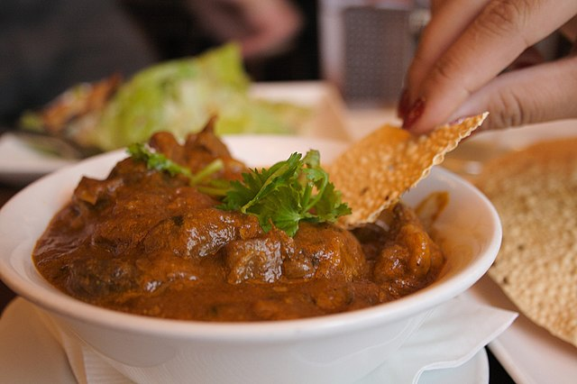

Rogan Josh is a mouth watering meat curry that originated in Kashmir and was heavily influenced by Persian cuisine.
Melt ghee over medium heat in large heavy based pot. Add cinnamon, cardamom and cloves and cook for one minute. Add onion and cook for 7 minutes, stirring frequently, until pieces are golden and starting the brown on the edges. Add the garlic and ginger, cook for another minute. Stir in the Spices, cook for 30 seconds. Mix in the tomato puree and salt, then add stock and mix. Add lamb, stir, bring to simmer. Place lid on and adjust heat to low or medium low so it's simmering gently. Cook 1 hour 45 minutes, giving it an occasional stir, until lamb is quite tender - use 2 forks to check, it should pry apart pretty easily. Remove lid, and continue cooking for another 15 minutes (to reduce sauce slightly) - lamb should be very tender by this stage. Stir in the Yogurt, the Extra garam marsala and fennel. Cook for another few minutes. Serve with basmati rice, sprinkled with fresh coriander leaves and other garnishes if desired.